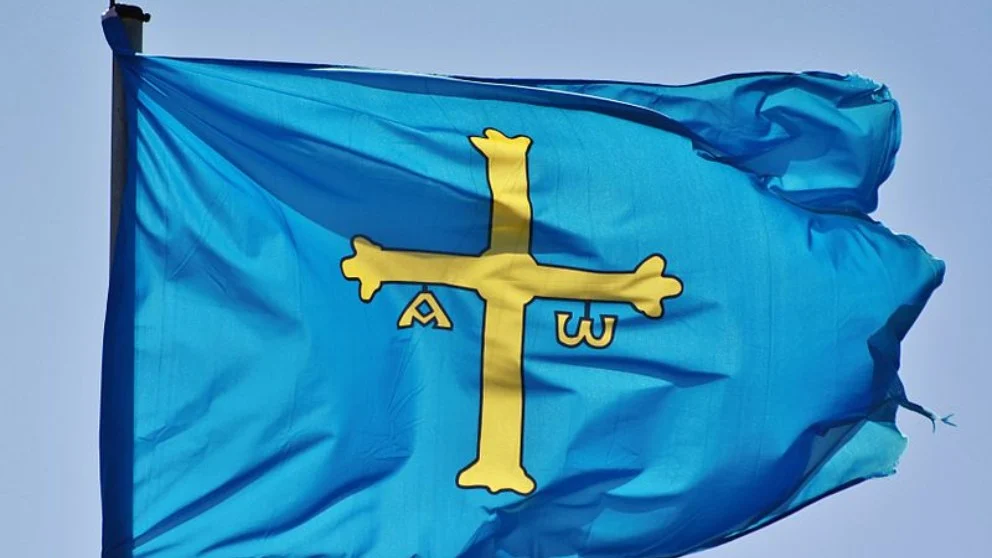

Испания религиозная, светская и образованная страна.
А в Овьедо есть улица, названная в честь Франсиско Суареса (Francisco Suarez) - одного из самых
выдающихся философов, богословов и юристов
Хотя Отец Суарес не родился в Овьедо (а в Гранаде), улица названа в его честь, чтобы
отметить существенный вклад в образование и науку.
И именно на этой улице мы будем изучать Bable.
Bable - народное название астурийского языка, распространенного в
Астурии, именно в той провинции, где мы с вами живем. Есть даже Академия астурийского языка (Academia de
la Lingua Asturiana), которая с 1980 года разрабатывает словари, правила и нормы для Bable.

Поэтому Овьедо пишется не только как Oviedo, но еще и Uviéu, а Хихон можно писать Gijón или Xixón.